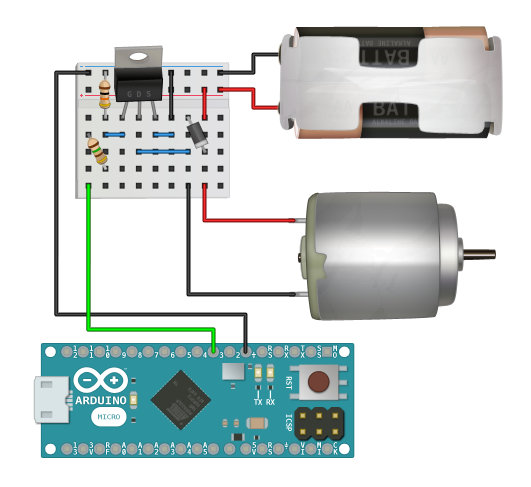

Control motors without delay with commands like on(), off(), forward(), reverse(), and ramp(). Fire custom events when the motor has reached the target speed with onTargetSpeed(), or when it has changed direction with the onForward() and onReverse() events.
Motors can be wired to move in a single direction, or can be driven in both directions with the help of a motor-shield or H bridge and this library. See the forward and reverse example included with installing this library.
This is a high powered motor driver circuit that can spin a single motor at variable speed in one direction. It is called a low-side switch that includes over-current and inductive kickback protection. The motor can be powered from batteries or a DC adapter. This circuit requires an Arduino PWM pin for variable speed control.

The Example Wiring circuit only spins the motor in one direction, but this library is capable of forward and reverse. To enable this capability you should use a motor shield or H bridge, then specify the [optional] forward and reverse pins in the constructor(). See the forward and reverse example included with installing this library.
You can use this library without calling update() and most methods will function correctly. You must continuously call update() inside of loop() in order to use theReal-Time methods tagged below.

Create a new motor and pass in the Arduino PWM pin number. The forward and reverse pins are [optional] and can be used to control the motor in both directions with the help of a motor shield or H bridge. The motor will be set forward() by default if you provide the forward and reverse pins.
Start the motor at full speed.
Stop the motor.
Set the spin direction for the motor so that all new commands move it forward. The motor is set forward() by default.
You must provide the optional forward and reverse pins in the constructor() and correctly wire the motor to use this method. The motor should be spun to a full-stop before calling this method. This library will forcibly stop the motor before switching to the forward state.
Set the spin direction for the motor so that all new commands move it in reverse.
You must provide the optional forward and reverse pins in the constructor() and correctly wire the motor to use this method. The motor should be spun to a full-stop before calling this method. This library will forcibly stop the motor before switching to the reverse state.
Flip the spin direction for the motor so that all new commands will move it in the opposite direction than they do currently. This alternates between forward() and reverse().
You must provide the optional forward and reverse pins in the constructor() and correctly wire the motor to use this method. The motor should be spun to a full-stop before calling this method. This library will forcibly stop the motor before toggling to the new state.
Pass in an integer from 0 - 255 to control the speed of the motor.
Pass in an integer from 0 - 100 to control the speed percentage of the motor. This is essentially the same as setSpeed() but with a smaller input scale.
Returns true if the motor is running at 100% speed.
Returns true if the motor is running at 0% speed.
Returns true if the motor is set in the forward() state.
You must provide the optional forward and reverse pins in the constructor() and correctly wire the motor to use this method.
Returns true if the motor is set in the reverse() state.
You must provide the optional forward and reverse pins in the constructor() and correctly wire the motor to use this method.
Returns an integer from 0 - 255 for the current motor speed.
Returns an integer from 0 - 100 for the current motor speed percentage.
Keep the real-time functions processing with each loop(). This must be called continuously within loop() in order to use any real-time methods.
Start the motor at full speed and turn it off after the specified time in milliseconds.
Pass in a timeout in milliseconds for how long it will take to ramp from the current speed to full speed with a linear transition.
Pass in a timeout in milliseconds for how long it will take to ramp from the current speed to full stop with a linear transition.
Pass in a value from 0 - 255 to set the target speed of the motor, and a timeout in milliseconds for how long it will take to ramp from the current speed to the target speed with a linear transition.
Pass in a value from 0 - 100 to set the target speed percent of the motor, and a timeout in milliseconds for how long it will take to ramp from the current speed to the target speed percent with a linear transition. This is essentially the same as ramp() but with a smaller input scale.
This method will return true once the motor starts moving forward(). This method will then return false until the motor has stopped, moved in reverse, then started moving forward again.
You must provide the optional forward and reverse pins in the constructor() and correctly wire the motor to use this method.
This method will return true once the motor starts moving in reverse(). This method will then return false until the motor has stopped, moved forward, then started moving in reverse again.
You must provide the optional forward and reverse pins in the constructor() and correctly wire the motor to use this method.
This method will return true once the motor hits the target speed set in any of the real-time methods. This method will then return false until a new target speed is set (with a real-time method) and then achieved again by the motor.
Check your downloads folder and double-click the  Motor.zip file.
Motor.zip file.
Move the un-zipped contents of the  Motor folder to the Arduino
Motor folder to the Arduino  libraries folder:
libraries folder:


Upgrade to Arduino IDE v1.5 or greater and load the Example Sketch to get started.